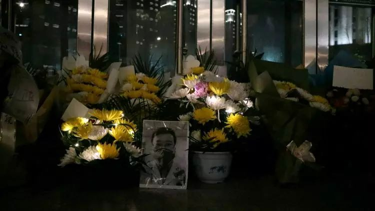
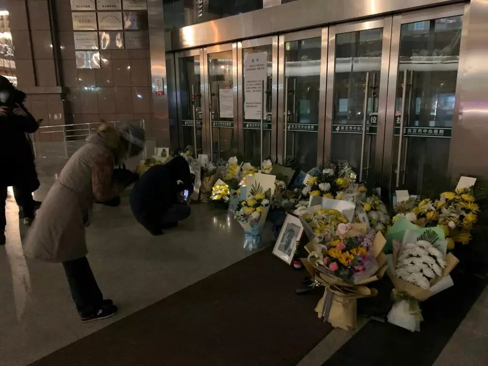
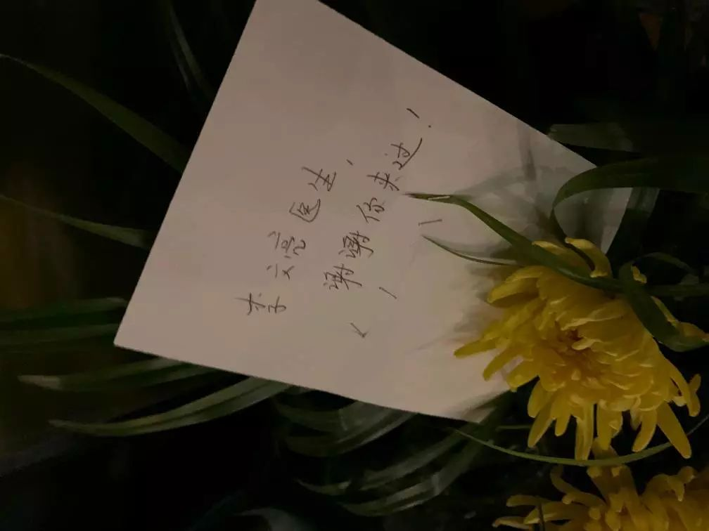
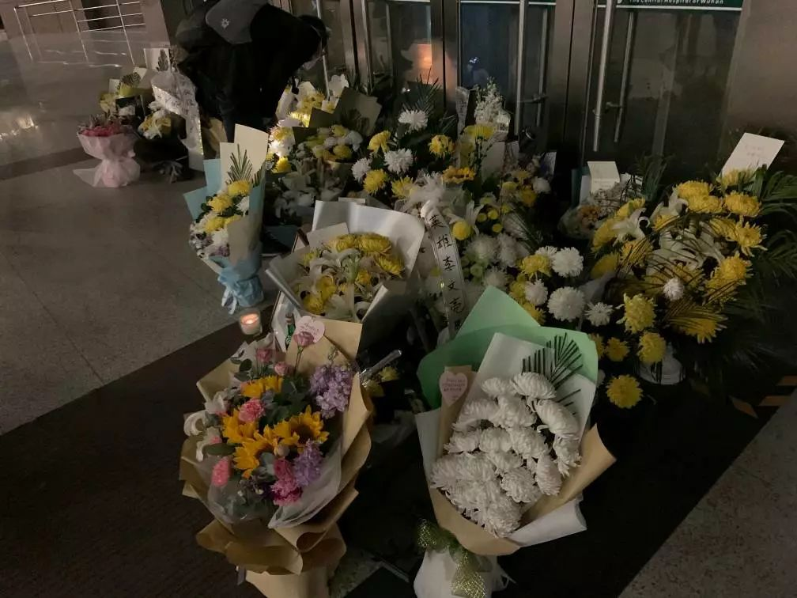

叶青武汉实录：“封城”17天，7个变化
原文链接 备份链接 从1月23日“封城”到元宵节，已经过去整整17天。即使我每天忙于记日记，也觉得时间过得很快啊。 过去我要早起，6点起床，7点到办公室，不堵车。现在则是天天睡到自然醒，有点提前退休的感觉。虽然我还有两年上班的时间。 …


*************▲*************（黎央/图）
全文共*775*字，文字阅读大约需要2分钟。
本文首发于南方周末 未经授权 不得转载
文 | 南方周末记者 李在磊 黎央
责任编辑 | 张玥
*************▲*************（ 黎央/视频）
2月7日，是武汉市中心医院李文亮医生离世的第一天。人们的悼念，在医院门诊大楼的大门口也持续了一整天。
晚九时许，医院门口的悼念者吹起了口哨，尖利的哨音划过黑夜。在武汉市区，许多市民自发发起了悼念李文亮的活动，人们点亮灯光，有人吹哨，有人高喊“武汉加油。”

（李在磊/图）
2月7日白天，网传李文亮医生的妻子发出求救贴，她目前位于湖北省枣阳市的娘家，家中老人染病、大人受苦。南方周末记者联系了求救贴公布的电话，确认发布信息的不是她本人，而是亲属，此后这个号码则无法联系。
南方周末记者赶赴枣阳市，但此前被称作唯一不封城的襄阳，高速公路已经封路，无法通行，其下辖的枣阳市部署了最严格的封城令，不许陌生人进出。南方周末记者只得在距离枣阳30公里外的小路折返。
晚21时，南方周末记者在武汉市中心医院门诊大楼门前，看到仍有市民来献花。医院门口摆着三幅李文亮戴着口罩的黑白照片，黄色、白色的菊花，簇拥着照片中的面庞，四周点缀着星星点点的灯。

（李在磊/图）
一位大哥鞠完躬，抑制不住悲伤，自己躲在角落里，扶着栏杆啜泣。他在鲜花的贴纸上写道：“李文亮医生，谢谢你的勇敢！”
“谢谢你的勇敢”，是鲜花上出现得最多的悼词。除此之外，武汉市民还对这位刚刚离去的医生说：“英雄，一路走好”、“李文亮，谢谢你来过”、“公民李文亮”以及“李文亮医生，谢谢你所做的一切！”

（李在磊/图）
（黎央/图）

（李在磊/图）

（黎央/图）
*************▲*************（ 李在磊/视频）
附近木技花艺馆的老板说，“封城”没多久，他们便关门歇业。就在今天，打电话订购鲜花的人特别多，想要给李文亮买束鲜花。他一趟又一趟地往返于花店与医院之间。

（李在磊/图）

（李在磊/图）

（李在磊/图）

（李在磊/图）

征集

《南方周末》现向所有身处新冠肺炎一线的读者公开征集新闻线索。我们欢迎武汉及周边城市医患联系记者，提供防疫前线的一手资讯，讲述您的新春疫情见闻。若您不在武汉，但您身处之所也有与疫情相关的重要新闻线索，亦欢迎您与我们分享。疫情仍在蔓延，南方周末将执笔记录每位国人在疫情面前的希望与困境，与广大读者共同面对疫情。祝愿所有读者朋友们，新春平安。线索可直接给本篇文章留言，格式为：【线索】+内容+您的电话（绝对会对您的个人信息保密）
戳击下面图片 继续阅读专题


原文链接 备份链接 从1月23日“封城”到元宵节，已经过去整整17天。即使我每天忙于记日记，也觉得时间过得很快啊。 过去我要早起，6点起床，7点到办公室，不堵车。现在则是天天睡到自然醒，有点提前退休的感觉。虽然我还有两年上班的时间。 …
原文链接 备份链接 武汉中心医院眼科医生李文亮（1986-2020）（资料图/图） 全文共*5612*字，阅读大约需要14分钟。 李文亮还活着吗？李文亮抢救过来了吗？这位武汉眼科医生的命运，在这个深夜牵动着很多人的心。直到凌 …
原文链接 备份链接 全文共*1529*字，阅读大约需要3分钟。 训诫书犹在，“吹哨人”何以安息？人们还希望看到对李文亮等人的训诫能得到纠正，让付出了巨大代价的“吹哨人”能得到正名。 本文首发于南方周末 未经授权 不得转载 文 | …
原文链接 备份链接 他曾说，“等病好了，还上一线，不想当逃兵。” 2月7日中午13:02，中央纪委国家监委网站发布消息，经中央批准，国家监察委员会决定派出调查组赴湖北省武汉市，就群众反映的涉及李文亮医生的有关问题作全面调查。 2月6日 …
原文链接 备份链接 *▲ *2020年1月24日，在武汉大学中南医院重症隔离病房，医护人员为病人治疗。 （新华社记者 熊琦/图） 全文共*3298*字，阅读大约需要*7*分钟。 有医生刚脱下工作服，巨大的压力让其瞬间变身“小女生”坐在房 …